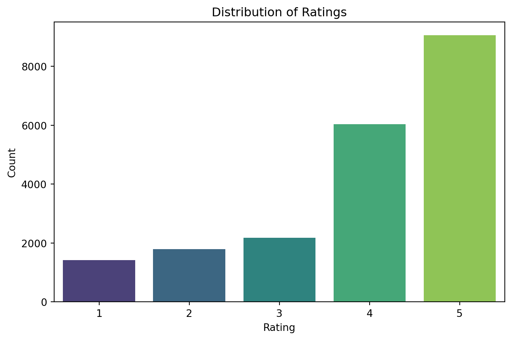
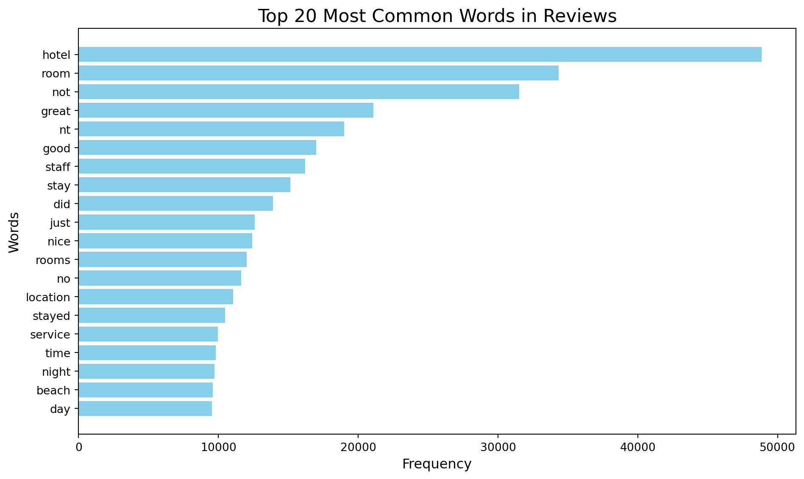
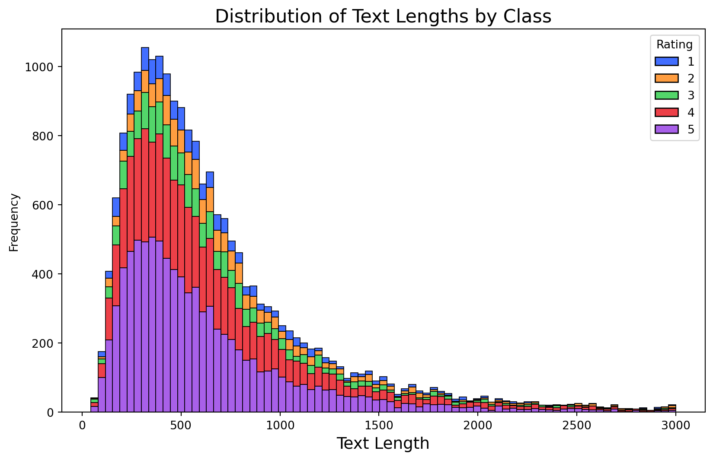

Code
import torchYixin Luo
import torchimport pandas as pd
import numpy as np
import re
from sklearn.feature_extraction.text import TfidfVectorizer
from nltk.corpus import stopwords
from nltk.tokenize import word_tokenize
from nltk.util import ngrams
from collections import Counter
import nltk
import matplotlib.pyplot as plt
import seaborn as sns
from sklearn.model_selection import train_test_split
from sklearn.feature_extraction.text import TfidfVectorizer
from sklearn.naive_bayes import MultinomialNB
from sklearn.metrics import classification_report, accuracy_score
## Load data
df = pd.read_csv('~/Downloads/tripadvisor_hotel_reviews.csv')
## distribution of ratings
plt.figure(figsize=(8, 5))
sns.countplot(data=df, x='Rating', palette='viridis')
plt.title('Distribution of Ratings')
plt.xlabel('Rating')
plt.ylabel('Count')
plt.show()
## Check the length of reviews
df["word_length"] = df["Review"].apply(len)
plt.figure(figsize=(10, 6))
sns.histplot(data=df, x="word_length", hue="Rating", multiple="stack", palette="bright")
plt.title('Distribution of Text Lengths by Class', fontsize=16)
plt.xlabel('Text Length', fontsize=14)
plt.ylabel('Frequency')
plt.show()
from collections import Counter
import pandas as pd
import re
# Step 1: Preprocess the text
def clean_text(text):
text = text.lower() # Convert to lowercase
text = re.sub(r'[^\w\s]', '', text) # Remove punctuation
text = re.sub(r'\d+', '', text) # Remove numbers
return text
df['cleaned_review'] = df['Review'].apply(clean_text)
# Step 2: Tokenize the text and count words
all_words = ' '.join(df['cleaned_review']).split() # Combine all reviews and split into words
word_counts = Counter(all_words) # Count word frequencies
# Step 3: Get the most common words
most_common_words = word_counts.most_common(20) # Top 20 most common words
print("Most Common Words:", most_common_words)
# Convert to a DataFrame for better readability
most_common_df = pd.DataFrame(most_common_words, columns=['Word', 'Frequency'])
print(most_common_df)
# Horizontal visualization
plt.figure(figsize=(10, 6))
plt.barh(most_common_df['Word'], most_common_df['Frequency'], color='skyblue')
plt.title('Top 20 Most Common Words in Reviews', fontsize=16)
plt.xlabel('Frequency', fontsize=12)
plt.ylabel('Words', fontsize=12)
plt.gca().invert_yaxis() # Invert y-axis to show highest frequency on top
plt.tight_layout()
plt.show()Most Common Words: [('hotel', 48864), ('room', 34324), ('not', 31525), ('great', 21094), ('nt', 19000), ('good', 16986), ('staff', 16213), ('stay', 15158), ('did', 13895), ('just', 12592), ('nice', 12409), ('rooms', 12024), ('no', 11620), ('location', 11043), ('stayed', 10469), ('service', 9975), ('time', 9824), ('night', 9728), ('beach', 9592), ('day', 9541)]
Word Frequency
0 hotel 48864
1 room 34324
2 not 31525
3 great 21094
4 nt 19000
5 good 16986
6 staff 16213
7 stay 15158
8 did 13895
9 just 12592
10 nice 12409
11 rooms 12024
12 no 11620
13 location 11043
14 stayed 10469
15 service 9975
16 time 9824
17 night 9728
18 beach 9592
19 day 9541
# remove the big comments
df = df[df['word_length'] <= 3000]
df["word_length"] = df["Review"].apply(len)
plt.figure(figsize=(10, 6))
sns.histplot(data=df, x="word_length", hue="Rating", multiple="stack", palette="bright")
plt.title('Distribution of Text Lengths by Class', fontsize=16)
plt.xlabel('Text Length', fontsize=14)
plt.ylabel('Frequency')
plt.show()
import pandas as pd
import re
from nltk.corpus import stopwords
from nltk.tokenize import word_tokenize
import nltk
# Text cleaning function
def clean_text(text):
text = text.lower() # Convert to lowercase
text = re.sub(r'[^\w\s]', '', text) # Remove punctuation
text = re.sub(r'\d+', '', text) # Remove numbers
text = re.sub(r'\s+', ' ', text).strip() # Remove extra whitespace
return text
# Apply text cleaning
df.loc[:, 'cleaned_review'] = df['Review'].apply(clean_text)